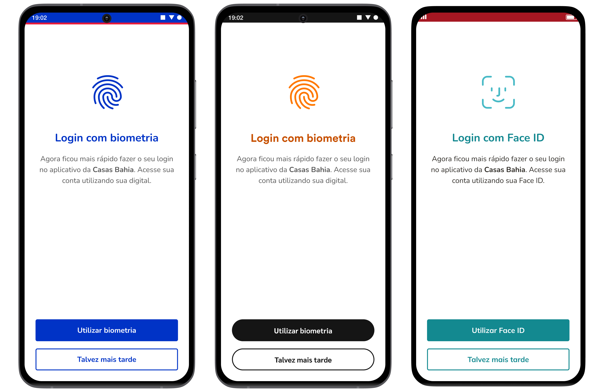
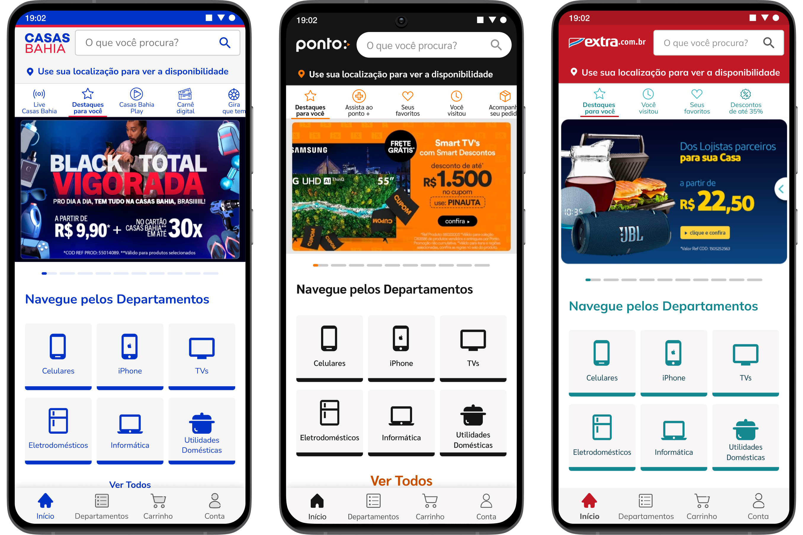

Project overview
As the product designer responsible for mobile in the app experience squad, I led improvements to three high-stakes user journeys ahead of Black Friday and across three white-label apps. The focus was on reducing friction in the buying flow, surfacing high-revenue categories faster, and bringing critical screens up to accessibility standards. I was responsible for the full design-to-delivery process: writing user stories, owning the mobile specifications, and working closely with engineers to ensure quality implementation.
Removing Barriers from the Buying Flow
Google Analytics showed a significant drop-off at the login screen during the purchasing journey. Users were either forgetting their passwords or abandoning the flow because they didn't want to be interrupted mid-purchase to authenticate.
The opportunity was clear: biometric login was already available, but not prominent enough. We redesigned the login screen to lead with biometric authentication, reducing the cognitive load and the number of steps required to complete a purchase. The goal was to make the fastest path the most visible one.

Shortening the Path to High-Intent Categories
Search data revealed that users were repeatedly typing the same category names into the search bar. These were also the categories with the highest purchase completion rates, meaning users who reached them were very likely to buy.
Rather than waiting for users to discover these categories through search, we brought them directly to the homepage as quick-access cards. This reduced the number of steps to reach high-intent products and was designed to increase both discoverability and revenue during the peak sales period.

Fixing Accessibility Gaps in Critical Flows
A heuristic analysis of key screens revealed recurring accessibility issues in flows users couldn't afford to struggle with, particularly the shipping address screen, which appeared late in the checkout journey. Low contrast ratios, poor information hierarchy, and lack of standards compliance were making it harder to scan and act on critical information quickly.
We audited and updated text styles, color usage, and layout hierarchy across key screens to meet accessibility standards. Given that these updates spanned three white-label apps, I paid close attention to mobile-specific constraints, touch targets, type rendering, and system-level font scaling to ensure changes worked consistently across platforms and devices.

Impact & Results
Specific metrics are under NDA, but the outcomes were measurable and tracked through a Looker dashboard I built to monitor the before-and-after impact of each change on the app.
Learnings & Reflections
One of the clearest takeaways from this project was how much impact comes from removing friction rather than adding features. The login redesign and the category shortcuts were both subtractive decisions: we made fewer things stand in the way of what users already wanted to do.
Being responsible for implementation oversight also pushed me to think more rigorously about mobile-specific constraints. Writing user stories that engineers could act on, and then reviewing the implementation in detail, made me much more precise about touch targets, contrast ratios, and platform differences between Android and iOS.
Building the Looker dashboard to track the impact of these changes reinforced for me the value of owning the measurement side of design decisions. It turned the project into a feedback loop rather than a one-time delivery.